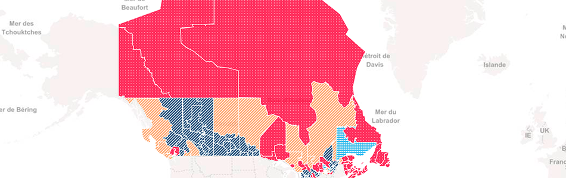

Some stuff I've made
Automation tools
Election research bot
I created a Slack-based bot to help reporters with research for the 2019 Canadian Federal election. It uses a custom built API and combines the 2015 election results with all the data from the 2016 Canadian Census. It will give summaries and deep dives into data about ridings. It will also compare two ridings and write a 700 word summary about a riding. The link above is to a J-Source piece I wrote about the tool.
CHL story automator

I created a tool that writes CHL game stories. It scrapes the boxscore page from any CHL game and turns that data into a 200 word story for the wire. The tool lets users choose what information they would like included in the story and will add and subtract based on inverted pyramid style. For a demo of this tool, please contact me.
Election maps
Ontario election map
The 2017 Ontario provincial election map I made. Uses Mapboxgl for the base and has a d3js SVG overlay. The overlay is loaded as topojson. Data is read from an API I helped create. Includes poll-by-poll level results and equal area results. Used online on the Globe and Mail, Toronto Star, Global News and more. It was also used as the big board map on CityTV and Global News.
Federal election map
The French version of the 2016 Canadian federal election map I made. Uses Mapbox (leaflet) for the base and has a d3js SVG overlay. Data is read from three JSON files.
Tools:
Canadian Press Chart template library
A collection of charts that are quick to deploy and use csv files for the data. The idea was to give our reporters a quick and easy way to visualize data.
Canadian Press static map maker tool
A tool that allows night deskers at CP to build their own locator maps in the browser. It means they can make maps without needing an Adobe Illustrator license or the knowledge to use Illustrator.
Quote card generator
A tool for creating social media quote cards that reporters can use when they tweet links to their stories.
Layouts / Graphics
Canada 150
A series of stories on Canada's 150th birthday. I did the layout and graphics/games for all the stories.
Contagion: A six-part series exploring how the unfettered use of antibiotics pushes humanity closer to a post-antibiotic era in which common infections may be impossible to treat.
The R. James Travers Foreign Corresponding Fellowship partly funded this series. It commemorates Jim Travers's career and aims to enable significant foreign reporting projects by Canadian journalists to give Canadians first-hand, in-depth coverage of stories beyond the country's borders. Travers spent six years reporting from Africa and the Middle East and deeply believed in the power of international reporting. I did the layout and graphics.
A graphical history of the Edmonton Oilers
A charted look at the history of the Edmonton Oilers. (Please forgive the loading time on and some of the layout this one. Postmedia has gone though some changes and I don't work there anymore)
Game of Waltes
A playable version of an old Indigenous game that is regaining popularity at powwows in Canada.
2018 Olympics - Quad toeloop
Explaining a Patrick Chan quad jump for the 2018 Olympics.
2016 Olympics - 100 metre dash results/ comparison
Comparing the 2016 Olympics 100m gold medal race results to the world record.
Jordan stays courtroom tracker
A minute-by-minute breakdown of a day in court. Used to illustrate why there are so many delays in trials.
Mark Buerhle card/pitch profile
An animated Mark Buerhle baseball card. Hovering flips the card over and shows his pitch pro le.
Away goals calculator
A tool to outline which team would advance between TFC and the Montreal Impact based on the away goals rule.
Babcock salary comparison
Comparing Mike Babcock’s salary to other big-time coaching contracts.
NHL Trade deadline Trader
A look at potential trades made to imitate Tindr.